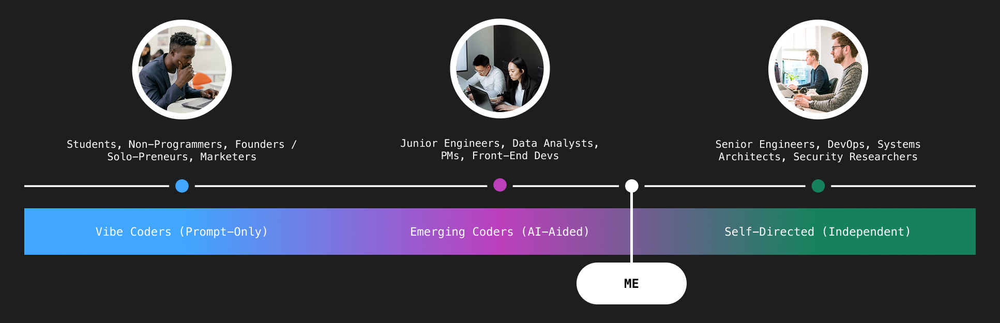

Empower coders, not add friction

Environmental Segmentation
The interface utilizes a tri-modal toggle to morph the IDE based on active intent, ensuring the platform services the user's immediate workflow requirements.
Copilot Mode : Tailors the environment for AI-assisted generation and pair-programming.
Agentic Mode : Enables high-level testing and autonomous agent execution for complex debugging.
Code Mode : A distraction-free environment optimized for senior engineers and manual logic execution.
The Logic of Reduced Cognitive Load
Drawing inspiration from Figma’s modal architecture, this system adopts a proven UX pattern to mitigate information density. By deconstructing the traditionally cluttered VS Code interface into specific user states, the platform eliminates "noise" and surfaces only the tools necessary for the task at hand.

To create an effective modal toggle, we must first analyze the primary user groups.
I have defined a spectrum of three user archetypes to better understand the evolving mental models of modern coders. As AI becomes deeply integrated into the development process, traditional roles like PMs, Engineers, or Designers are shifting. We must design for User-Enabled Thinking—an approach that prioritizes how much autonomy a user grants to the AI at any given moment.
